BƠM DẦU > THÁO |
| 1. XẢ ÁP SUẤT CỦA HỆ THỐNG NHIÊN LIỆU |
Ngắt cáp ra khỏi cực âm của ắc quy.
Hãy tháo tấm ốp bậu cửa bên phía người lái.
Dùng một tô vít, nhả khớp 7 vấu.
Dùng một dụng cụ tháo kẹp, nhả khớp 3 kẹp và tháo tấm ốp bậu cửa.
| 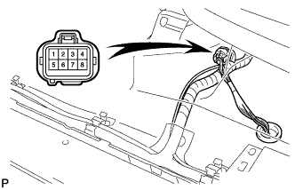 |
Hãy lật thảm trải sàn và ngắt cút nối ra, như được chỉ ra trên hình vẽ.
Ngắt cáp ra khỏi cực âm của ắc quy.
Khởi động động cơ. Sau khi động cơ tự chết máy, hãy tắt khoá điện OFF.
Quay khởi động động cơ một lần nữa và sau đó kiểm tra rằng động cơ không thể nổ được máy.
Nới lỏng nắp bình nhiên liệu và sau đó xả áp suất bình nhiên liệu hoàn toàn.
Nối giắc của bơm nhiên liệu.
Hãy lắp tấm ốp bậu cửa bên phía người lái.
Xoá các mã DTC (Xem trang Kích chuột vào đây).
| 2. NGẮT CÁP ÂM RA KHỎI ẮC QUY |
| 3. THÁO CỤM ĐỘNG CƠ |
Tháo động cơ ra khỏi xe (Xem trang Kích chuột vào đây).
| 4. LẮP ĐỘNG CƠ LÊN GIÁ TREO |
Đặt động cơ vào giá bắt.
| 5. THÁO CUỘN DÂY ĐÁNH LỬA |
Tháo bu lông và cuộn đánh lửa.
| 6. THÁO BUGI |
| 7. THÁO CỔ HỌNG GIÓ |
Ngắt giắc nối cảm biến vị trí bướm ga và giắc nối môtơ điều khiển.
Tháo 2 ống nước đi tắt.
 |
Tháo bulông, 2 đai ốc và cổ họng gió.
Tháo gioăng.
| 8. THÁO ĐƯỜNG ỐNG NẠP |
Tháo cảm biến vị trí trục khuỷu ra khỏi kẹp.
| 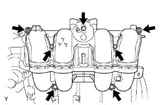 |
Tháo 5 bu lông, 2 đai ốc, đường ống nạp và gioăng.
| 9. THÁO CỤM MÁY PHÁT |
 |
Lắp nắp cực.
Tháo đai ốc, bu lông và dây điện máy phát.
Ngắt giắc của máy phát.
Tháo 2 bu lông và máy phát.
| 10. THÁO GIÁ BẮT MÁY NÉN NO.1 |
| 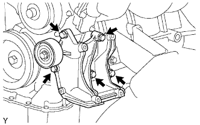 |
Tháo 5 bulông và giá bắt máy nén.
| 11. THÁO BỘ CĂNG ĐAI |
| 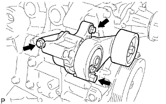 |
Tháo 3 bu lông và bộ căng đai.
| 12. THÁO ĐƯỜNG NƯỚC VÀO |
Tháo bulông, 2 đai ốc, ống nước vào và gioăng.
| 13. THÁO VAN HẰNG NHIỆT |
Tháo van hằng nhiệt và gioăng.
| 14. THÁO PULI CĂNG ĐAI SỐ 1 |
Tháo bulông, tấm bắt puli, puli căng đai và bạc.
| 15. THÁO ỐNG NƯỚC ĐI TẮT SỐ 1 |
Tháo 2 đai ốc và ống nước đi tắt và gioăng.
| 16. THÁO NẮP ĐỔ DẦU |
| 17. THÁO NẮP ĐẬY NẮP QUY LÁT |
Tháo 19 bulông, 2 đai ốc, nắp đậy nắp quy lát và 2 gioăng.
| 18. THÁO CẢM BIẾN VỊ TRÍ TRỤC CAM |
| 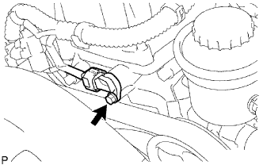 |
Ngắt giắc của cảm biến.
Tháo bulông và cảm biến.
| 19. THÁO PULI TRỤC KHUỶU |
Quay puli trục khuỷu và gióng thẳng rãnh của nó với dấu thời điểm đánh lửa O trên nắp xích cam.
| 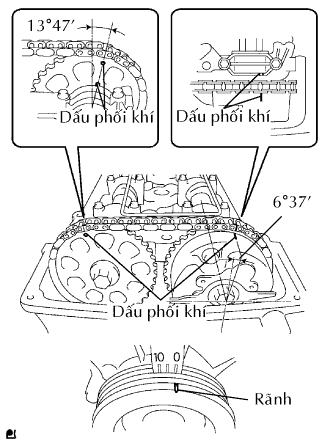 |
Kiểm tra rằng các dấu phối khí của bánh răng trục cam và đĩa răng đã được gióng thẳng với các dấu phối khí của nắp bạc No.1, như được chỉ ra trên hình vẽ.
| 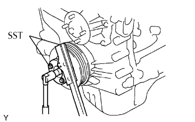 |
Dùng SST, giữ puli trục khuỷu và tháo bu lông bắt puli.
| 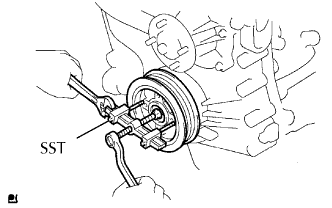 |
Dùng bu lông bắt và SST, tháo puli trục khuỷu.
| 20. THÁO CÁCTE DẦU SỐ 2 |
Tháo nút xả và gioăng.
Tháo 20 bu lông và 2 đai ốc.
| 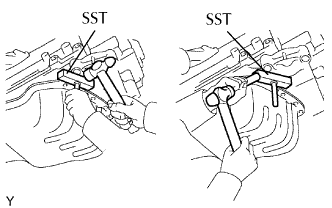 |
Cắm lưỡi của SST vào giữa các cácte dầu. Cắt keo làm kín và tháo cácte dầu.
| 21. THÁO LƯỚI LỌC ĐẦU |
Tháo bulông, 2 đai ốc, lưới lọc dầu và gioăng.
| 22. THÁO CÁCTE DẦU SỐ 1 |
Tháo 16 bu lông và 2 đai ốc.
| 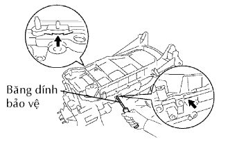 |
Tháo cácte dầu bằng cách nậy vào giữa cácte dầu và thân máy bằng một tô vít.
Tháo gioăng chữ O.
| 23. THÁO CẢM BIẾN VỊ TRÍ TRỤC KHUỶU |
 |
Ngắt giắc của cảm biến.
Ngắt giắc nối ra khỏi giá bắt giắc.
Tháo kẹp dây điện.
Tháo bulông và cảm biến.
| 24. THÁO NẮP XÍCH CAM (CỤM BƠM DẦU) |
| 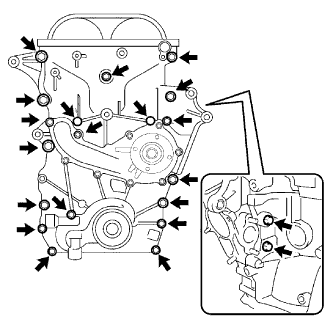 |
Tháo 19 bulông và 2 đai ốc như chỉ ra trên hình vẽ.
| 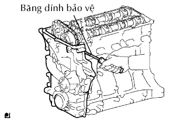 |
Tháo nắp xích cam bằng cách nạy vào giữa nắp xích cam và nắp quy lát hoặc thân máy bằng một tô vít.
Tháo 3 gioăng chữ O.
| 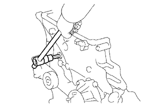 |
Dùng một đầu lục giác 10 mm, tháo nút của nắp đậy xích cam.
| 25. THÁO CỤM BƠM NƯỚC |
 |
Tháo 8 bulông, bơm nước và gioăng.